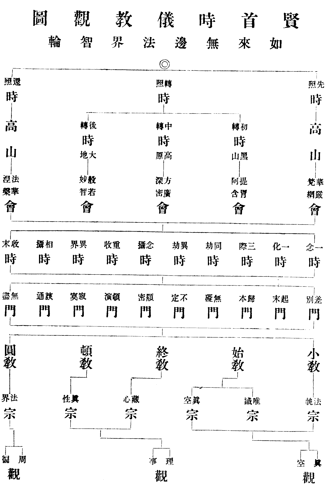
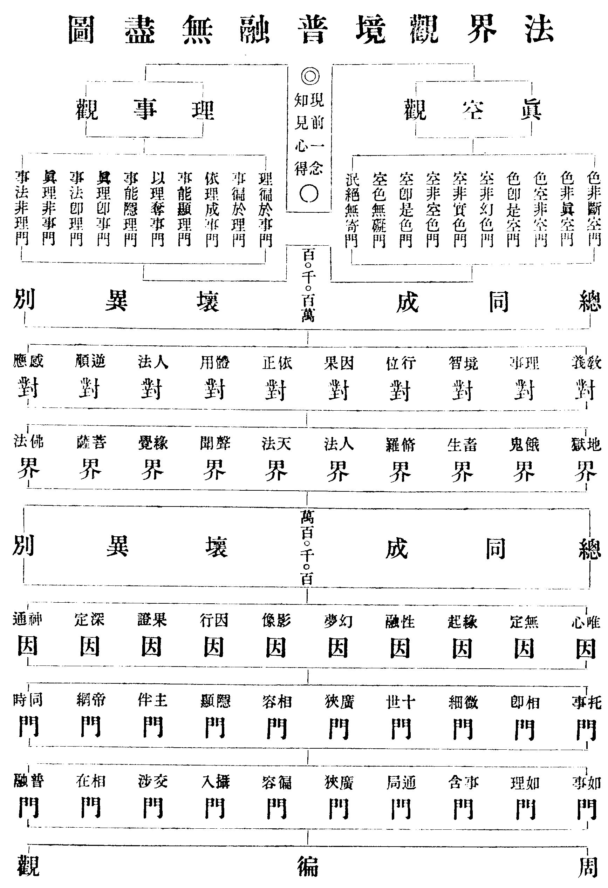

卍新纂大日本續藏經 第08冊
No.238 華嚴經要解 (1卷)
【宋 戒環集】
第 1 卷
賢首時儀教觀圖

法界觀境普融無盡圖

No. 238
大方廣佛華嚴經要解
戒環嚮以華嚴海藏汗漫難究。遂三復方山長者疏論。述總要敘。疏條經旨。稍辨端倪。繼沿綴緝清果明禪師所集修證儀。略解聖號表法。屢為賢達下詢。願盡九會之奧。因取清涼國師綱要。與論校讐。別為斯解。以方山為正。清涼為助。洞究全藏纔萬八千言。庶幾覽者。無異剖大經於一塵。覩法界於彈指也。
建炎戊申上元日
初懸敘
大方廣佛華嚴經者。直示諸佛眾生平等佛性本真德用也。三世諸佛所同證。十方菩薩所同修。大千聖眾所同尊。法界眾生所同具也。釋迦如來初成正覺。欲明所修之因所證之果。欲使人人同修同證。故現千丈盧舍那身演說。文殊菩薩與阿難海。於鐵圍山間結集。對上中下根。分為三部。上部有十三千大千世界微塵數偈一四天下微塵數品。中部有四十九萬八千八百偈一千二百品。下部有十萬偈四十八品。皆自一音所演。隨類各解。為上根聞此。稱性徧周剎說塵說熾然無間。則大千剎塵未足究盡。猶以多數號之爾。中根聞此。惟悟當會之經。未極剎塵之說。故偈品稍寡。下根聞此。意局言詮見存限量。故惟得十萬偈四十八品。傳來未備。今經止四萬五千偈三十九品。在昔結集之後祕於龍宮。龍樹菩薩運神海藏。觀前二部渺若淵海非人世所及。乃誦後部歸於五天。爰布中夏。雖豐文博義理窮法界事極剎塵。皆為發明當人自性故有之德。蓋大方廣體物物圓成。但局於識情。故束之令小。佛華嚴行人人本具。但汩於塵勞。故失其華嚴。此經不離識情示現智海。即諸塵勞繁興妙用。一念圓證。則大方廣體佛華嚴行。當處現前不從他得。信謂自性固有矣。則詮指之要不可不究也。此經所詮。以毗盧法身為體。以文殊妙智為用。依智斷習。則普賢妙行為因。習盡智圓。則補處彌勒為果。一藏體要不離此四。故以毗盧為教主。所以立體也。以文殊為信首。所以起用也。以普賢發行。所以示因也。自十信而始五位而終。乃見彌勒。所以示果也。然體用因果。必依毗盧文殊普賢彌勒何也。梵語毗盧舍那此云光明徧照。在佛為清淨法身。在人為本覺妙性。華嚴以此為體者。直欲眾生見妙性而證法身也。梵語文殊師利此云妙德。在佛為普光大智。在人為觀察妙心。華嚴以此為用者。直欲眾生明妙心而證大智也。普賢者。德無不徧曰普。佑上利下曰賢。在佛為真淨妙行。在人為塵勞業用。華嚴以此為因者。直欲眾生翻塵勞而成妙行也。梵語彌勒此云慈氏。在佛為補處之主。在人為數取之身。華嚴以此為果者。直欲眾生離數取而趣補處也。然則華嚴體用因果。諸佛眾生則一。但諸佛合覺。眾生合塵。故有間耳。苟於此經。一念反照滅塵合覺。則革凡入聖信猶反掌。而自己毗盧文殊普賢彌勒當處圓現。所謂初發心時便成正覺。信不妄也。
二釋題
大方廣佛標本智也。華嚴經者詮妙行也。本智即平等佛性。妙行即本真德用也。大言體極無外。蠢動賢愚皆所預有。方言相同法界。方正平等不遷不動。廣言用等太虗。周徧含容無所窒礙。佛即本智之果號也。華者萬行之因。對果言華。嚴者以是因華莊嚴果佛。忘心遺照無嚴不嚴。然後福智行願十德圓滿。乃證十身盧遮那也。清涼云。大方廣者所證法也。佛華嚴者能證人也。其所證者不離本智。其能證者不離妙行。蓋一揆也。經則貫攝所詮之法。為一定之體萬世不易也。此經立題。先果後因。而兼舉者何也。先果後因。示斯果佛先所固有特藉因華莊嚴而後顯著。兼舉者。欲因果相資也。蓋非果則因無以立。非因則果無以成。是以此經初則舉果勸修。次復舉行趣果。一經之體。一題可見矣。
三科解
十會四十品經大科分三。曰序正宗流通。初世主妙嚴品為序分。二如來現相品已下為正宗分。三如來出現品已下為流通分。(清涼從法界品爾時文殊從善住樓閣出已下為流通分)三科之中。各具五位法門。號三周因果二種常道。五位法門者。十住十行十迴向十地十一地也。三周因果者。初會世主品至毗盧舍那六品為一周。乃佛自分五位因果。為舉果勸修見道分。二會至八會。從佛名號品至如來出現三十二品為一周。乃進修者五位因果。為設法治習修證分。(九會離世間品明果後利生之常道。而通為設法治習修證分也)第十會法界品。善財南遊始終為一周。乃圓彰重諭五位因果。為去言依行圓彰法界分。二種常道者。一離世間品。同塵不染利生常道。二法界品。忘修絕證佛果常道。此一藏總科也。(清涼以初會六品為舉果勸樂生信分。二會至七會三十一品為修因契果生解分離世間一品為托法進修成行分。法界一品為衣人證入成德分通以信解行證四字判盡一藏)言十會四十品經者。此經既謂表法。有十處十會。演十信十地等修證法。各以十眾配十波羅蜜。一一言十者。十為圓數。所以圓彰頓法也。初會菩提場六品。二會普光殿六品。三會忉利天六品。四會夜摩天四品。五會兜率天三品。六會他化天一品。七會三禪天一品。八會普光殿十一品。九會普光殿一品。十會給孤園一品。是為十處十會四十品。或云七處九會者。普光三會爰折二處。三禪闕文。又減一處一會也。然雖十處十會。不離大智普光之殿法界華藏之都一處一會之說。但隨進修行相寄位表法。非如情見有前後往來之相。故經節節言。爾時世尊不離菩提場普光明殿而昇某處也。
三周因果。
初一周為佛自分五位因果勸修等者。初會菩提場說六品法。顯佛自己曠劫修因嚴淨剎海利生之事。以勸進後學。使見實迹而發進修也。清涼科為舉果勸樂生信分。其意亦同。初世主妙嚴品。二如來現相品。三普賢三昧品。四世界成就品。五華藏世界品。六毗盧舍那品。
初世主妙嚴品者。即十會發起之通序也。華嚴會上菩薩。此會依菩提場說者。明曠劫修證之事。故於菩提場處而說。惟普賢行方能證入。故依普賢菩薩發起也。神天皆號世主。謂以福德神力主護世間也。華嚴會上通有四十一眾。初集法會各申偈讚。顯如來因地所修五位法門。一一眾海威德熾盛。舍那十身圓融炳著。同嚴法會。故名妙嚴品。此品首言菩提場成正覺地。及師子座。眾寶莊嚴。境像互現。佛處寶座。成最正覺。智入三世。身徧十方。譬如虗空具含眾像。總明果覺依正殊特德用無邊也。次陳法會雲集。有四十一眾。表佛自身五位因果。為進修宗本。
初普賢等十菩薩為一眾。表十信法。次海月光等十菩薩執金剛神身眾神足行神道場神主城神主地神主山神主林神主藥神十眾。表十住法。又次主稼神至主晝神十眾。表十行法。又次阿脩羅至日天子十眾。表十迴向法。又次三十三天至大自在天十眾。表十地法。此眾既集。各能說法。讚明如來所修五位法行。自後所設進修之法皆本於此。故為進修本宗。
初表十信法眾。
有十佛剎微塵數普賢菩薩為上首。表普賢無盡之行也。十名同號曰普。表普賢圓融之行。其普字下即彰自行。皆諸佛之同道也。以此表十信者。示諸佛同道。皆依普賢大行發信。為入法之初基也。
次表十住法眾。
初海月光等十異名菩薩。表十住果行也。於十普之後舉十異名者。表依普賢行起差別行也。次執金剛神至主藥神九眾。表十住因行也。其眾各有佛剎塵數。皆表當位圓融之行也。執金剛。表應身護法守正不壞。身眾神。表以無量身事無量佛。足行神表眾行滿足隨順正道。道場神表大願莊嚴廣興供養。主城神表善守心城嚴淨佛國。主地神表深重願力成遂羣生。主山神表積集善根出世高勝。主林神表智榦行華說法廣蔭。主藥神表知根善救用以法藥。十住果眾。始於海月光大明。表含容廣濟除煩開覺。終於大福光智生。表利行明足克成種智。皆成德之行也。其因眾。始於執金剛表守正不壞。終於主藥表知根善救。皆昇進之行也。神表智通萬有不為而應也。以是通智依佛所住。始於守正終於善救。無思無為冥進此道。斯成海月大福果矣。
十住第一名初發心住。首以果眾表者。示初發心時便成正覺也。餘眾次第表十住名。亦次第表十波羅蜜。論文備詳。而每眾又各十名。表一波羅蜜又各具十。圓融相攝重重無盡。乃一性之妙用萬法之本體也。於同眾中又有異名者。以行隨位異。故表法亦異。意在圓融博達。若滯一法。則行不該通智不增明。無以具無盡之行。無以成種智之果矣。自執金剛神下至龍天鬼眾。皆菩薩隨應之迹。散華異類非實鬼神也。
次表十行法眾。
初主稼神。表以資糧法成就眾生。主河神。表迅流普潔利益眾生。主海神表容會善惡皆入法流。主水神表隨物潤益能淨諸垢。主火神表隨緣發光破除暗障。主風神表以平等智散滅我慢。主空神表廣大明潔萬行無著。主方神表智照十方大千圓滿。主夜神表以智照明生死長夜。主晝神表一心匪懈闡明佛日。次主稼十眾表十行者。示從住起行利生之因果也。前以菩薩表果神眾表因。而此始終皆以神表者。示十行法即因即果。為一乘資糧位。蓋以佛果十行。資大心眾生進趣佛位。資見道菩薩長養大悲。即因果相資義也。三乘說信住行向。為地前四種資糧。初地已上為見道加行。此經不然。即十信位至十住初心。總為見道。住行向地總為加行。總。為資糧。三者同進互相資發。廢一則涉小乘。非圓頓法。直須以果嚴因以因嚴果乃成佛華嚴也。其十眾表義皆利生之行。次第表十行名。亦次第表十波羅蜜。及隨位異行。圓融相攝。一如前解。後亦準此。蓋十波羅蜜五位通修。菩薩萬行不離此也。
次表十向法眾。
初脩羅眾。表處生死海和同真俗。迦樓羅眾。表以大方便拔濟眾生。緊那羅眾表非聖非凡同行自在。摩睺羅伽眾表守護伽藍令割癡網。夜叉眾表守護拔濟苦活眾生。天龍眾表興法雲雨覆蔭潤澤。鳩槃茶眾表示入諸趣垂慈利生。乾闥婆眾表依五分香娛樂眾生。月天子眾表清涼熱惱顯發寶明。日天子眾表處高利下照物成功。以脩羅至日天子十眾表十向者。以前十住十行但修出世悲智未盡處俗利行。此位迴真向俗迴智向悲。使真俗圓融智悲不二。處生死海自在如王。其位彌高其行彌下。故始以脩羅王表。終以日天子表。餘皆隨位之行也。
次表十地法眾二。
初欲界五天五。初三十三天王讚云。發起世間廣大福業者。經歎德云。皆勤發起一切世間廣大之業。此天王即帝釋也。處忉利天。具大福業。少欲淨居。令世願慕。同修善行。是謂發起廣大之業。二夜摩天讚。經云。習大善根心常具足。論云。此天晝夜常明表大智也。有眾德妙樂表法樂也。三兜率天讚。經云。勤持一切諸佛名號。論云。具戒定慧得生此天。四化樂天讚。經云。皆勤調伏眾生令得解脫。論云。化利一切以為自樂。五他化天讚。經云。皆勤修習自在方便廣大法門。論云。表菩薩化他自樂。
次色界五天五。初禪大梵天讚。經云。慈愍眾生舒光普照令得快樂。論云。離欲清淨名梵。二禪光音天讚。論云。此天已滅憂苦。出語口中光生。表教光普化。三禪徧淨天讚。論云。已無憂苦唯有禪悅。四禪廣果天讚。經云。以寂靜法為宮殿。論云。福德廣大為廣果。色界頂大自在天讚。經云。皆勤觀察無相之法。所行平等。論云。表十地滿無相智成。上所舉經皆歎德詞。
以十天眾表十地者。以從三賢超入十聖。其道明極。故以天表。餘義同前。此與法華會上。皆無無色天眾者。以彼天無色蘊不可見故。
上釋雲集眾竟。
通舉所集聲聞辟支菩薩佛為四聖。即法界會上影響聲聞。及諸比丘知識是也。天人鬼畜六道為六凡。即雲集神天八部及諸俗士知識是也。諸眾來集。雖夜叉摩睺羅鳩槃茶鬼畜之類。亦各說是法門。足知皆是三身四智聖人權現也。
法眾既集。爾時如來所坐之座一切莊嚴具中。各出佛剎塵數菩薩。海慧自在神通王等為上首。各興供養。說偈讚佛。以明古今同道。及讚法眾雲集。又為現相說法之因也。佛因其讚請。於是放眉間光。現諸勝相為眾說法。故次有如來現相品也。論以前眾表五位法。方至十地。未有表十一地之眾。今妄意此眾。既為諸佛同道。宜表十一地果位之法。非表所急則略之也。或經文不標聖號。而品位合位則補之。或廣舉多號而表法惟一。有不勝錄者則約之。意欲文簡義明使。禮誦者易欣慕無煩厭也。又今解釋。亦依法論撮要義舉大綱。或本文意隱。則取別卷以兼明。或舊說辭略。則摭所聞而設暢。或循舊言意而小有改易。皆務疏條精朗。使研味者易深達而無壅蔽也。
二如來現相品者。正宗分起。此菩薩神天世主既集。默默請法有三十七問。初問十八種佛法。次問十九種菩薩海。皆是諸佛智行境界德用。以發起此經一切法門。經云。爾時諸菩薩及一切世間主作是思惟。云何是智海。於是如來放光現相以答所問。初總答。次別答。遂成一部四十品經也。初總答有二。一現智境。即此品是。二現行境。即後品是。此品於面門眾齒間。放十種光普照十方。以佛神力。其光能說偈頌。召集世界海菩薩眾俱來聽法。其菩薩眾。一一毛孔現種種光明。一一光中現剎塵菩薩。徧事剎塵諸佛。徧度剎塵眾生。此現華嚴法界體性智悲自在無礙無盡之相也。如來復放眉間毫相。於毫相中現菩薩眾。各說偈讚。以顯如來無邊境界神通之力。經云。爾時世尊欲令一切菩薩得如來無邊境界神力故。放眉間光徧照十方。一一塵中現無數佛。復有菩薩名法勝音等。與世界海塵數菩薩俱時而出。說頌讚佛。此現剎海無障礙法。是現智境之相也。總答前問。故曰現相品。(此品計一卷)。
三普賢三昧品者。現行境總答前問也。普賢德無不徧。表佛行門。三昧此云正定。即佛神力加被普賢。使入正定。現行境也。經云。爾時普賢承佛神力。入一切毗盧藏身三昧。能於法界示現眾相。出生一切諸三昧法。成就一切佛功德海。時十方法界一一塵中有剎塵佛。一一佛前各有普賢入是三昧。以至令諸菩薩各得塵數三昧行門。是現行境。總答前問。故曰普賢三昧品。
已答前智境行境竟。自後一藏法門。一切因果無非智行所攝。故先以二門總答。所謂諸佛境界乃至菩薩發趣等法。總備於此矣。後三十七品即別答也。
四世界成就品者。即別答世界海眾生海之問。意明眾生諸佛世界形相萬殊苦樂淨穢轉變差別各隨自行業力所感成就。故經云。諸世界海有微塵數轉變差別。所謂染汙眾生住則成染汙轉變。發菩提心眾生住則成清淨轉變。乃至菩薩所集則成大莊嚴轉變。諸佛涅槃則成莊嚴滅轉變。所以言此者。欲令眾生知染淨境苦樂等相皆從業生。遂生正心修出要道。以入佛智慧海入佛華藏海。是以先說世界成就品。次說華藏世界品。成就品別答初起。(此品與前普賢三昧品共一卷)。
五華藏世界品者。別答佛海波羅蜜海之問也。此品說毗盧無盡法界妙莊嚴境。由依法身智體普賢願行。修五位十波羅蜜之所感報。是謂佛海波羅蜜海。經云。此華藏莊嚴世界海在。十重風輪上香水海蘂香幢大蓮華內。有無數香水海塵數世界種相依而住。號世界網。中心一世界種有二十重。此娑婆界在第十三重。即毗盧如來所居。有十世界種圍之。次十之外。又有百世界種周帀。而裹以金剛大輪圍山。計一百一十一世界種。各有所表也。十重風輪持香水海。出大蓮華剎塵相依者。表大願風輪持大智海。出生無邊妙行之華。嚴持身剎為佛淨土也。中心一世界種。表佛位總攝一切徧一切為萬法之本。次十者。表五位一因一果。又次百者。表五位因果各具十波羅蜜。其內十一世界種各二十重。表五位昇進及佛位各具十因十果也。一一世界有微塵數佛。皆毗盧如來往昔親事。經於一界舉一佛。各表當位昇進之果也。其百世界種極外一世界種。各有四重。各有四佛。表四攝法。意明十度萬行以利行愛語同事四攝為外防也。其世界網各具一切勝妙莊嚴。皆佛智行徧周攝化所感。其間亦有雜染世界者。表佛慈攝化不捨於此。故經云。雜染及清淨。斯由業力起。菩薩之所化。言世界種世界海者。種以出生之多。海以包攝之多。數三千大千至恒沙。為一世界種。恒沙界種為一世界性。恒沙界性為一世界海。此等皆藏於蘂香幢大蓮華內。故名華藏世界。論謂數大千至恒沙為一世界海。恒沙界性為一世界種。即是種能包海。而經云。世界海內有世界種。今據經說。此皆是毗盧如來往昔親事諸佛。表當位昇進之果也。(此品計三卷)。
六毗盧舍那品者。明古先毗盧如來亦居華藏世界說法利生。其法眾法門與今不異。但佛號不同。蓋隨機異。非佛異也。由前五品舉今毗盧成道因果利生之事。此則引古證今。以明三世道同因果不別。使後進者同證此果。故復說此品。而通前皆為舉果勸修見道分。蓋未見道體。難以進修。故次此之後。乃示設法治習修道分也。此品舉往古過剎塵劫有佛次第出興。有王子號大威光。歷事諸佛。證得一切法門一切利行一切三昧。互舉四佛而無結終之處。蓋此品來文未備也。清涼以大威光為毗盧前身。經中不言。又言此六品經。為舉果勸樂生信分。(此品計一卷)。
上釋三周中初周法竟。
第二周。二會至八會。為進修者五位因果等者。此正示學者五位進趣之行。初依信心。發明正智破照無明。次依五位。鍊治惑習研極正果。是謂設法治習修證分。通有三十二品。初十信位六品。二十住位六品。三十行位四品。四十向位三品。五十地位一品。六十一地一品。七佛果位十一品。
清涼科為修因契果生解分。謂修五位之圓因。契妙覺之極果。令物善解因果相也。
五位皆言十者。各依十法昇進故也。自住行向地十一地為五位。以信位為因果位為果。是謂五位因果圓攝法界行門。然初信後果與中五位為七。而特言五位者。信本果體。初後圓該不立階差。故不預數。自信而出。趣果而動。位有增進。故寓數以明。信如種子。位如發生。果如結實。發生之際有甲拆葉華之序。而種與果中。雖具不可分矣。蓋道本無數即信與果也。法則有數即五位也。然位止於五者。以天數五地數五萬法之數亦五。故天之經五星。地之緯五嶽。人之行五常。而內則五藏外則五體。至胸之會通亦五而已。擴而推之。五方五色五行五音。有不勝舉。則華嚴設位以五。蓋體萬法自然之數也。五位法門以信為初因者。令修華嚴人。外信五位之法皆自心德用。內信自心之佛即毗盧同體。心法相應然後進修。則智行不迷。及至果終。不離初信之法。譬如種子先具全體然後發生。及至成實還是初種。此則因果不移。本末相徹。實華嚴之要門也。
十信法門。即第二會普光殿說六品。一佛名號品。二四聖諦品。三光明覺品。四問明品。五淨行品。六賢首品。此依普光殿令文殊說者。表妙信依普光本智而起。依擇法妙慧而住。若無此慧。但得二乘。不得乘如來乘成正覺也。
一佛名號品者。示佛名迹隨法應機等眾生心各各不同。經云。一切諸佛知諸眾生欲樂不同。隨其所應說法調伏。故如來於此娑婆世界一四天下。示種種身種種名。或名一切義成。乃至或名導師。其數十千。於一四天下如是。十方世界亦復如是。名各十千。於此娑婆如是。盡法界虗空界亦復如是。示種種身種種名號品。此因第二會他方來集菩薩發四十問。初三行經。清涼分為十問。一佛剎。二佛住。三佛剎莊嚴。四佛法性。五佛剎清淨。六佛所說法。七佛剎體性。八佛威德。九佛剎成就。十佛大菩提。清涼曰。此十問為五對。皆上句問依報。下句問正報。又次問十住十行至如來最勝及如來光明兼十信。成三十問。通計四十問也。方山將初三行經。皆以佛剎字為句。只作問四種佛剎。即闕六問。宜依清涼為句也。此初問佛剎佛住中。問如來境界及應化神力。故說此品答之。亦兼答前佛名號海之問也。以此答佛剎佛住者。廣明如來身隨剎現名應物彰。令信入者知自心佛本周法界。一切處無非佛剎無非佛住。名皆佛名體皆佛體。則華嚴妙觀念念現前矣。此眾四十問。與世主三十七問大同小異。而此再問者。前為舉果勸修分。其問為明佛果所成之法。此為設法治習分。其問為明因行所依之法。果所成法不涉言詮。故如來現相以總答也。因所依法須藉欵啟。故文殊言說以別答。已下諸品皆次第別答也。
將說十信法時。十方菩薩。各從金色平等色十色世界十智佛所。與剎塵菩薩來集。以表信門十因十果。果即十智佛。因即文殊等十菩薩。十色世界即所修法門。要即諸色法。明自心法也。
此十位法。皆自根本不動智體而出。餘九皆不動智德之用。依體修進則其位有十。攝用歸體唯一法耳。此則寂照雙運修證同時無復漸次。故經以佛菩薩同舉。表因果同彰也。然寄此位表法。則為佛菩薩事。即法明心。則皆當人性德。華嚴之法俯為機明。勿推之聖賢謂自無其分也。故肇法師云。聖遠乎哉。體之即神。
二四聖諦品者。示佛說法稱性應機各各不同。經云。十方世界說四聖諦。各有四百億十千之名。乃至盡法界虗空界說四聖諦。各有百億萬種之名。皆隨眾生心悉令調伏。意明佛所說法。皆以苦集滅道四諦為體。因此四諦說種種法。夫性本天真法無說示。由無明起業苦集成緣。聖人不得已。應是而說教。故諸經皆以四聖諦十二緣為宗。而此稱性法亦首明之。蓋性自此迷自此現。則根塵解脫本性真明矣。謂之四聖諦者。令了世間苦集四聖諦第一義。如理通融無復厭斷。如法界性無去無取。依此為因。則五位昇進悉皆若是。而佛果可得矣。此是答前演說海之問也。(此品與前佛名號品共一卷)。
三光明覺品者。佛於初會。放眉間果光。照十方已從足下入。至此又從足下放出。其光照一大千至十大千。漸次增廣徧照法界。令發信者覺佛智境廣大無盡。反覺自己法身智行亦悉同等。由是進入五位開明智眼成果地覺。故號光明覺品。所以從足放出果光者。表依果行因互相資發也。凡自因趣果。必具信解行證之四法。前三品明信。後三品即解行證也。
四問明品者。文殊與九首菩薩互相問答。明顯萬法。以示十信之解也。初文殊問覺首云。心性是一。善惡苦樂業云何別。覺首答曰。諸法無作用。妄心分別有。如理而觀察一切皆無性。意明業體本真。背覺故妄。依真起覺則一切皆真。此十菩薩。明十甚深法也。覺首菩薩明緣起甚深。財首明教化甚深。寶首明業果。德首明說法。目首明福田。勤首明正教。法首明正行。智首明助道。賢首明一道甚深。文殊明佛境甚深。皆為顯明真淨法體。十問之後。盡法界眾生界一切差別之法。以佛神力悉皆明現。故曰問明。(此品與前光明覺品共一卷)。
五淨行品者。廣發大願為十信之行也。意以眾生無明貪愛染諸塵勞失佛華嚴由無願力。既發淨信。須依大願淨治塵勞。要即塵勞以成淨行。此因智首菩薩發一百一十問。云何得身語意業及一切勝妙功德。故文殊為說一百四十大願。略云。菩薩在家當願眾生免其逼迫。孝事父母當願眾生護養一切。終至睡眠始寤當願眾生一切智覺。皆令即塵勞事翻成妙行。以是大願淨身口意。即獲一切勝妙功德。由是克成五位無盡行海。一切染法不能違礙。是為淨行。(此品與賢首品上卷共一卷)。
六賢首品者。明依十信法門發心修進功德難量與佛同等。示十信之證也。經云。爾時文殊菩薩說無濁亂清淨行大功德已。欲顯示菩提心功德。問賢首曰。我今已為諸菩薩說佛往修清淨行。仁亦當於此會中演說修行勝功德。賢首答偈甚廣。備陳發心修行功德。增益獲果。利生供佛。乃至出入方網三昧。隱顯同時自在無礙。皆同毗盧文殊普賢果行德用。示於十信六品之法。發菩提心解行相應。即已獲此證。自此頓入十住矣。方網三昧者。一方入正定餘方從定出。諸方入正定一方從定出。猶如帝網交徹融攝。至於男子身中入正定女子身中從定出。皆如帝網。乃法界性用本自如是。千差一體無二無別。但隨眾生所見差別。若證如來無作性用則出入自在。心無差別則境無差別矣。十信圓證當造乎此。此乃賢首行證。則創從凡夫首入佛性。鄰極亞聖是謂賢首。故以賢首為品。自光明覺品至此。皆答菩薩發趣海之問。蓋五位進趣自十信發也。(此品計二卷)。
十住者。由信證入生如來家。依無住智永不退還名住。十住法門。即第三會須彌頂忉利天說亦六品。一昇須彌山品。二須彌頂偈讚品。三十住品。四梵行品。五發心功德品。六明法品。
一昇須彌山品者。以處表法也。前普光殿即人間地界。依地界說十信。者表創從凡地發信。今須彌山妙高際天。於此說十住者。表從信昇進入廣大際故。十住品云。菩薩住處廣大。與法界虗空等。其山在七金山海中。高聳天極。非手足攀攬所登。表十住法出妙智海高超情境非心想攀緣所得。此品明信終昇進。及敘帝釋置座迎佛之事。又云。爾時世尊不離一切菩提樹下。而昇須彌向帝釋殿。帝釋置普光明藏師子座請佛安坐。此乃淨法界身。徧一切處隨緣應現。猶如一月影現千江隨舟南北而曾無去來也。帝釋請佛說十偈讚。第一云。迦葉如來具大悲。彼佛曾來入此殿。至第十云。然燈如來大光明。彼佛曾來入此殿。論云。前三是今劫佛。後七是前劫佛。明創入十住古今會同佛法不異也。
二須彌偈讚品。乃法慧等十菩薩。讚顯當位之法勸示昇進。蓋十住以智為體以慧為用乃可昇進。故依法慧菩薩讚顯也。將說十住法時。十方十慧菩薩。各從因陀羅華等十華世界。與剎塵菩薩來集。其菩薩眾。各於十月佛所淨修梵行。表十住法依智起慧為因復成智月之果。得是果法。則無明頓徹煩惱頓除清涼如月。其佛表果菩薩表因。亦如十信因果同彰也。十華世界即所修法門。要即因華開敷智果也。經云。爾時十慧菩薩說偈讚佛已。法慧菩薩即入無量方便三昧。十方各千佛剎微塵數佛同名法慧。普現其前讚歎加被。論謂眾生具有如來法身智慧。為迷緣自障。凡能修方便三昧以顯之。則與諸佛法身智慧冥會。是故同名之佛普現其前也。
三十住品。正說十住名義。示當位所行之行。一發心住者。剏依正智發菩提心也。二治地住者。為利眾生開擴心地也。三修行住。善觀諸法增正行也。四生貴住。由尊貴行生佛法家也。五方便具足住帶真隨俗漚和適化也。六正心住逢善惡境心不動也。七不退住趣正妙道緣不壞也。八童真住含真抱一智行無失也。九法王子住得法王法當紹佛位也。十灌頂住。成就十智即當成佛。如王太子陳列灌頂也。十住之文。一住各成就十法。示當位之行。又各勸學十法。示位位增勝。其十段結文。各云有所聞法即自開解不由他教。及設梵行品終。又云若諸菩薩能與如是觀行相應。一切佛法海俱得現前。初發心時即得菩提。知一切法即心自性。成就慧身不由他悟。凡欲明進固有之德使不外求也(此品與前二品共一卷)。
四梵行品。明十住中觀察身身業語語業意意業佛法僧戒等十法。於中何者為梵行。知身等三業及佛法僧戒中有作有為之法皆非梵行。則於身無所取。於修無所著。於法無所住。於梵行亦無所名。心無障礙。方便自在。如是名為清淨梵行。又舉如來十種智力。令當位修習。為成就慧身之法。
五發心功德品。明修十住法所得功德不可稱量。經舉十餘喻。重重比較不及少分。為其發心功齊果海無限齊故(此品與前梵行品共一卷)。
六明法品。乃精進慧菩薩。問法慧菩薩當位昇進之行。令轉更明白。為十行之因。故繼此說十行法(此品計一卷)。
十行者。既依普智發信住佛所住。遂能繁興萬行。自利利人。故說十行。十行法門即第四會在夜摩天說四品。一昇夜摩天品。二夜摩偈讚品。三十行品。四無盡藏品。
一昇夜摩天品者。須夜摩此云善時分。為空居天。無日月而常明。以蓮華開合分晝夜。故曰善時分。於此說十行者。表行依法空無所滯著而善應時宜也。此品明從十住昇進。及敘夜摩天王化座迎佛之事。夜摩天王請佛說十偈讚。亦稱十如來曾入此殿。顯今所入十行理智與古不異也。
二夜摩偈讚品。即功德林等十菩薩。讚顯當位之法勸示昇進。以積行在躬其德廣蔭。故以功德林菩薩讚顯也。將說十行法時。十方十林菩薩。各從親慧梵慧等十慧世界。與剎塵菩薩來集。其菩薩眾。各於十眼佛所淨修梵行。表此位從慧起行覆蔭攝化故。菩薩眾以林為名。表妙行廣蔭也。此位已得如來智慧之眼。其佛以眼為名。表智眼利生也。此亦因十行所行因行示法。欲行人法之也(此二品與十行品上卷共一卷)。
三十行品。正說十行名義。示當位所行之行。一歡喜行者。以身命財法三施悅自他也。二饒益行者。以律儀善法攝生三聚均饒益也。三無違行。忍順物理無所違也。四無屈撓行。精進於道無退弱也。五離癡亂行定慧明正無所惑亂也。六善現行般若圓照境智洞明也。七無著行漚和涉有心無所著也。八難得行大願成就方能得也。九善法行以妙善力說法軌物也。十真實行體真實智一切誠諦也。此十行正以十波羅蜜為本。而無行不攝矣(此品計二卷)。
四無盡藏品。說信戒慚愧聞施慧念持辯十種藏。前七名七聖財。以二守護。後一積而能散。又前九蘊積。後一出生。一一行量。體含法界德用不窮。故名為藏。以此成前十行之法。使行行無盡。成後十向之法。使昇進無盡。故繼此說十迴向法。(此品計一卷)。
十迴向者。前十住十行出俗心多大悲行劣。至此則以十住所得諸佛之智十行所行出世之行。濟以悲願處俗利生。迴真向俗。迴智向悲。使真俗圓融智悲不二。而迴向菩提實際。總通五位利被一切。是名迴向。智斷恩德由此具足。法報化身由此成就也。十迴向法門。即第五會兜率天說有三品。一昇兜率天品。二兜率偈讚品。三十迴向。
初昇兜率天品者。兜率此云知足。此天不離欲界。而於欲境無所染著。故名知足。此天居欲界五天之中。於此說十迴向者。表迴真向俗迴智向悲。雖涉塵勞無所染著。常處中道無所偏滯也。此品明從十行昇進。及敘兜率天王敷座迎佛之事。經云。兜率天王於其殿上敷摩尼寶座有百萬億層級。其諸莊嚴供養之具各百萬億。有十信十住等菩薩亦百萬億。纔見此座各獲法利。表迴向法總通五位圓融無盡也。十住法座有百千層級。十行有百萬。十向有百萬億。皆表昇進位位增勝也。蓋自十住至此。智行悲願已全。菩薩道法已備。雖後二位不出此法藏。茲總通而迴向一切。則功利德用圓融無盡。故凡事法各百萬億也。兜率天王請佛亦說十偈。舉十如來曾入此殿。論謂此明諸佛道迹本自周徧古今不異也(此品計一卷)。
二兜率偈讚品。即金剛幢等十菩薩。讚顯當位之法勸示昇進。表此位智悲利生破惑摧邪而自無傾動。故以金剛幢讚顯也(此品與迴向品初卷共一卷)。
三十迴向品。正說十向名義。示當位所行之行。一救生離相者。大悲廣濟大智無著也。二不壞迴向者。於三寶等得不壞信也。三等一切佛者。學三世佛所修迴向也。四至一切處者。悲願事行稱周法界也。五無盡功德藏者。緣無盡境成無盡功得無盡果也。六隨順堅固者。善行常隨堅固平等法性。則一切善根悉堅固也。七等順眾生者。以平等心隨物饒益也。八真如相者。體真行慈無有作相也。九無著無縛解脫者。不於見著不為相縛作用自在也。十法界無量者。稱性起用超過諸量也。此迴向法。以大願力。融會智悲生死涅槃。成一法界真自在法。作後二位果德之基。融前三位成十地行。故繼此說十地法(此品計十一卷)。
十地者。蘊積前法至於成實。一切佛法依此發生。故謂之地。經云。趣入菩薩諸地行。一切佛法所從生。十地法門。即第六會他化天說一品。他化天乃欲界之頂。依此說十地者。表十地之行依眾生應化無自化也。蓋前為三賢猶為自利。此為十聖純是利他。故無自化。此地以普光明智為體。所謂已踐如來普光明地。前四位雖不離此體。但蘊積之功未全。不得名地。此則通初徹末功行已全。即前四位融為一法。故名諸佛智地。自此至十一地更無別法。論云。此十地法。通初徹末為一際法門。此諸菩薩皆當會雲集之眾。金剛藏為上首。承佛神力。為眾說十地名已不解其義。示諸佛智地法不輕授也。時解脫月與眾菩薩殷勤三請然後乃說。故曰請法主伴。此眾初三十七位同名為藏。獨後一位名解脫月者。表此位依金剛智蘊積前法。加以三十七道品助令充實廣大具足名藏。至獲滿果名解脫月也。經於諸地多云。菩薩住此地已。以大願力得見多佛。所謂見多百佛多千佛乃至多百千億那由他佛。悉以深心敬事供養。此乃功依地滿智以願圓。能於佛境互參徧徹。故得見如是多佛承事供養。剛藏身中現出智佛者。經至法雲地。說此地菩薩種種無量神通智力。大眾皆疑。於是金剛藏菩薩入一切佛國體性三昧。時會皆見自身在剛藏身中。又見其中菩提樹師子座上。有佛號一切智通王。諸相莊嚴說不能盡。論云。一切佛國體性即無作法性身也。菩提樹即法性中覺體。智通王即法性中妙智也。人人本具。唯不自加行顯發耳。愚謂行人苟自顯發。不獨不疑十地菩薩神通智力。足知華嚴所詮一切佛德皆吾性之常分也。剎塵同名等者。剛藏菩薩說十地已。十方各十佛剎塵菩薩同名金剛藏。從金剛幢所來為作證。表此地行法十方同道皆智地果摧伏一切而自體無動也(此品計六卷)。
十一地者即等覺位也。超出十地名十一地。即第七會三禪天說一品。以初禪離憂二禪滅苦。三禪惟是法悅妙樂。依此說十一地者。表進修功成迴超諸苦常享法樂也。其品名佛華。其文未來。謂之佛華者。初登佛地果行未滿故也。蓋華對果言。故繼此說佛果行也(此品梵文未來)。
約五位至此。答前所問者。十住答菩薩智海也。十行菩薩行海也。十向菩薩誓願海也。十地菩薩地海也。十一地菩薩出離海也。所謂菩薩波羅蜜菩薩神通菩薩乘菩薩助道等海。皆備於此。次自十定至壽量不思議普賢行十一品。答佛壽量海佛變化海佛解脫海。而所答盡矣。後法界品。圓彰重諭五位因果。則三十七答。亦依前圓彰重諭也。
夫說五位之法。始於忉利終於三禪。諸天延佛。始於置座終於敷座者。以住於佛住亦未離乎住。故十住之法。於地居之天忉利說之。其座則安置而未至於化也。行行皆真超然絕俗。故十行之法。於空居之天夜摩說之。其座則化之而未至於敷也。真則自利。非所以利他。化則依空非所以入有。必須迴真入俗運智行悲。使上可超乎欲境下可同乎萬物。故十迴向法。於五天之中兜率說之。其座則敷而布之。不止於能置能化而已。自是蘊功成實廣博如地。妙用發越不依漸次。故十地之法。越化樂而於他化天說之。過此則入等覺位。迥超諸苦常享法樂。故十一地法。越二禪而於三禪天說。其表法言意一字不虗。五位功圓佛果現前等者。論科此為等覺地。以住行向地位分賢聖行有淺深。其功未圓。其覺未等。雖曰登地。是菩薩果。非佛果也。兼前四法進入此位。乃圓乃等。而佛果可得矣。繼此說佛果位也。
佛果行者妙覺位也。自十信初因歷五位法。修治惑習。習盡智明。乃依此行以成佛果。即第八會普光殿說有十一品。乃十定十通十忍阿僧祇如來壽量菩薩住處不思議法十身相海隨好功德普賢行如來出現品是也。清涼謂前六品明等覺因圓。後五品明妙覺果滿。十信因行與此果行。皆依普光殿說者。示修華嚴行初依普光本智起信。而歷位昇進至行周果滿。未嘗離於本智也。此則因果不移本始不二。三世一念初後不遷。乃與不動智佛相應。而證不滅不生法界極果。實華嚴大旨也。
初十定品。示生佛共有根本智體。為寂用之源。唯果佛能盡其妙。德用無涯。寄圓顯十耳。一普光大定。二妙光大定。三徧往佛國大定。四清淨深心大定。五知過去莊嚴藏大定。六智光明藏大定。七了一切佛莊嚴大定。八眾生差別身大定。九法界自在大定。十無礙輪大定。謂十定者。古今諸佛寂用自在徧周之大體。所以參融五位成一法體。無始無終不遷不動。一多純雜同別自在。故佛將說十定之名。先於普光殿入剎那際三昧。明此定體全即普光智體。無復古今延促始終遷動之相。皆頓圓於一彈指頃。故云剎那際三昧。得是三昧者。皆可與毗盧同行。寂用自在矣。此即生佛共有本智之體寂用之源也。此品佛自說十定名。令普賢說十定用。明佛為根本智體。普賢為差別智用。二者相資。乃能寂用自在也。此眾有一百位。前三十位同名為慧。後七十各異名者。論以三十表三解脫。七十表七覺行。謂此位菩薩。依三解脫慧而行七覺行。覺利羣生。其慧則同。其行則異。然三空七覺。為進修初行而施於果位者。此聖人俯己同物之行也。故此品云。摩尼珠王能隨所求。與物同色。而不失自珠之德。喻得果寶王隨機利生俯同羣物而不失自果之德也(此品計四卷)。
次十通品。示從定起用十種智通。一他心通。二天眼通。三宿命。四知未來。五天耳。六往一切剎。七善別言辭。八無數色身。九達一切法。十入一切滅盡三昧。此即開六通成十通也。天眼天耳神足漏盡各分二。他心宿命不分也。天眼即二四。二約現在四約未來也。天耳即五七。五約善聞七約善別也。神足即六八。六約力用八約現身也。漏盡即九十。九約智中漏盡十約定中漏盡也。此皆以無障礙大智為體。非小聖所及也。此繼十定品明從定起用。故有此十種智通也。
次十忍品。示方便攝化隨行法忍。果行至此滿矣。以通成忍果行滿終等者。論云。十地已前以忍成通。十一地後以通成忍。前即隨位進修之伏忍。此即隨行利生之法忍。果行至此。為普賢行滿。純是妙覺如來。而不捨菩薩方便。故曰果行滿終妙覺菩薩行。法忍者。經云。菩薩有如響忍如影忍如化如空等十忍。謂以通事利生實非同異。譬如谷響從緣所起。而與法性無違無雜。又如日光影現一切。在油非油。在水非水。於川不漂。於井不沒。不異一體而有彼此。不隨於物而有遠近。菩薩於無二法中分別二相。善巧通達隨行法忍皆如是也。此前後數品無菩薩號。乃取經意補之(此品與前十通品共一卷)。
次阿僧祇品。及隨好功德品。明佛果所迷二愚之法。所謂廣大算數愚。隨好功德愚。此二唯佛明達。菩薩尚愚於此。故四十品經。唯此二品是佛自說。餘皆當位菩薩所說。所以明廣大算數者。為彰佛德非數量可盡也。故長行中辨能數之數無量。偈頌中辨所數之德無邊也。則僧祇品明徧一切數。壽量品明窮一切時。住處品明徧一切處也。論阿僧祇此云無數。此品皆舉不可數不可說法。而經云。如是三世無有邊。一切菩薩皆明現。此與隨好功德品明佛果所迷二愚之法。菩薩尚愚於此。唯佛明達。故曰佛地法門。此品因心王菩薩請問發起。自此至如來出現品。明佛果三業二智廣大自在。此則以通成忍。致心業廣大自在如王。故依心王菩薩發起也。
次壽量品。明佛地實報稱性之壽。窮剎海無盡時分。而出數域之表也。讚云。以日等劫無滅無生等者。經云。爾時心王菩薩於眾告言。此娑婆世界。釋迦佛剎一劫。於極樂世界彌陀佛剎為一晝夜。極樂一劫。於袈裟幢世界金剛堅佛剎為一晝夜。如是舉十世界。各以前位一劫為後位一晝夜。而經云。如是次第過百萬僧祇世界。最後世界一劫。皆如前剎為一晝夜。普賢同行諸大菩薩充滿其中。意明佛地實報稱性之壽無盡根本智無生滅。此由心業廣大自在。以致命業廣大自在也。
次菩薩住處品。示無方攝化不捨世間。故舉八方若山若海皆有聖居無所不徧也。讚云攝化無方等者。爾時心王菩薩於眾告言。東方有處名仙人山。從昔菩薩於中止住。現有菩薩名金剛勝。與菩薩眾常在其中說法。南方有處名勝峰山。西方有處名金燄山。以至北方香積山。東北方清涼山。海中金剛山。東南支提山。西南光明山。西北香風山。計九處。皆如上舉。後又廣舉成二十二處。唯此九處有菩薩名。此依一閻浮提略示耳。菩薩住處實徧法界無有方所論。云此。明佛菩薩行周徧揚化常行不斷不捨世間。此由命業廣大自在。以致行業廣大自在。命業行業皆本於心。故皆心王菩薩所說。清涼山即今五臺山是也(此品與前二品共一卷)。
次佛不思議品。明佛果法智德深廣超越。非識情思議所及。讚云根本智中不思議用等者。前明佛菩薩行攝化之事。此明佛不思議能化之智。非情識名言所及故曰不思議。此品乃佛神力加青蓮華藏菩薩演說。而告蓮華藏菩薩。論謂青蓮華藏。表本智無染具差別智。又告蓮華藏者。表本智別智二者相成。以顯心佛不思妙用。此則二智廣大自在也(此品計二卷)。
次十身相海品。明大智攝化所感正報有十種身。謂菩提身願身化身力持身相好身威勢身意生身福德身智身法身。復有十華藏世界海微塵數相莊嚴。故號十身相海也。常稱三十二相即化身也。觀無量壽佛經稱八萬四千相即報身也。今十華藏微塵數相即法身也。讚云萬德莊嚴不思議智等者。經舉九十七大人相至十華藏海微塵數身相。是謂十身相海萬德莊嚴。論云。前說心佛二智不思議用。此示心佛二智不思議報。故曰不思議智清淨果佛。
次隨好功德品。明隨塵數相有塵數好。相言其狀。好言其美也。一一好中有多光明。能淨無邊界脫無間罪。功德難思也。讚云光相莊嚴不思議行等者。經云。如來有隨好名圓滿王。出大光明名清淨功德。能照塵剎。隨諸眾生行業欲樂皆令成就。由以隨行正智破諸障惱。成此光明。自嚴其身兼以嚴物。故曰隨好莊嚴。隨好者隨形相好也。前明智報成大人相。此明行報成隨好相。故曰不思議行清淨果佛。此二品法總。彰三業二智之報廣大自在也。此品告寶手菩薩而說。表法身性光隨行接引。次二聖號乃品中敘事(此品與前十身相海品共一卷)。
次普賢行品。明佛行海融前智門廣施利行。讚云融前智門等者。此品廣陳普賢行法。融前果智。為入塵利物。諸佛同行如來果行至此極矣。故繼此說如來出現品。次普幢佛者。爾時普賢說是法已。十方剎塵菩薩同名普賢。各從普勝世界普幢自在佛所來詣此土作證。表佛普賢行之體用。以處道謙柔為普勝。摧伏自他為普幢。理智悲願具足隨緣為自在。昇進位極冥造此道為來詣此土。如是作證。表佛普賢行徧一切處十方同道無二無盡也(此品計一卷)。
次如來出現品。初如來性起妙德菩薩者。此即信首文殊異號。於此請問如來出現之法。示從十信依智進修。至此世出世間智悲行滿。則本智如來從自性起妙德圓具。故以如來性起妙德菩薩。請問如來出現之法。此與前品。融會三業二智之成功廣大自在也。又讚云自性如來法雨所潤等者。經說如來出現有十種無量利行之相。至音聲第十相云。如來欲以正法教化眾生。先布身雲彌覆法界。示現種種光明電光。出生無量三昧雷聲。從無礙悲心起大智風輪。然後於法身雲廣雨法雨。所謂為坐道場菩薩。雨法界無差別法雨。為最後身菩薩。雨遊戲如來祕密教法雨。乃至為求獨覺乘者。雨深知緣起遠離二邊不壞解脫法雨。為求聲聞乘者。雨以智慧劍斷煩惱冤法雨。餘不勝舉。皆明自性如來功圓智現無作無限自在利行也。
次二位授記成佛眾者。普賢菩薩說如來出現法已。十方剎塵如來同名普賢來為作證。復作是言。今此會中十方剎塵菩薩。得一切菩薩神通三昧。我皆與記一生當得菩提。又有剎塵眾生發菩提心。我亦與記當來經不可說剎塵數劫皆得成佛號殊勝境界。此明自既修行得果。此所化眾亦當得果。於菩薩言一生。以根機已熟超達之易。於眾生言塵劫。以積迷之久超達之難。特對機言耳。於實性中古今一時三際一念。則以剎那頓證為一生。又以剎那三昧。顯出如來正智慧海。則無邊劫迷一時頓滅。為經不可說劫皆得成佛。號殊勝境界者。迥出情計之境故也。
夫始於文殊發信。歷位進修。至十一地佛果既成。又自本有定體。從定起用。隨行成忍。通達二愚。享實報壽。無方攝化。不捨世間。成不思之智。獲十身之報。又以普賢大行圓融廣利。則自性如來之德於是明極。昔為妄覆。至此乃現。故終說如來出現品。總該果行。又說離世間品。明果後利生之常道。而通為設法治習修證分也(此品計三卷)。
清涼科前三十一品。為修因契果生解分。離世間一品。為托法進修成行分。
第三周第十會入法界一品。善財南遊。重諭五位因果。為去言依行圓彰法界分者。前則詮示法門。此欲體而行之。故依善財重諭。又由前修功終。忘詮頓證入此法門。故為去言依行。此品之文。自因推廣則示善財百城。自果反約則示彌勒樓閣。而五位行門法界理事目擊而盡。是謂圓彰法界。依此證入故名入法界品。即最後逝多林給孤園所說。此林園即西域人間。於此說法界品者。示不離人間即佛法界也。法界會上來集之眾。皆默示神變以彰果行。在會之眾。因其默示。亦皆默得三昧。即去言依行之意也。蓋滯詮則終迷己證。無行則終成狂解。故於最後別設去言依行法門。托善財南遊之迹。還位不廢進修。作法垂範使人倣傚。蓋得是道後。正可修行安然順流。以入佛法界妙莊嚴海。而惑者徒執去言之名。迷依行之實。遽以絕學無為為是。以真修正趣為非。終自訶教忘修佚蕩無據。則華嚴實談稱性行法皆為虗設。而撥無之狐逐塊之類。紛紛天下矣。學者慎思。
清涼科此一品。為依人證入成德分。
大科二種常道。
一同塵不染利生常道者。即進修者五位功成果後常行也。楞嚴謂初心修行如澄濁水。靜深不動沙土自沈。此名初伏客塵煩惱。去泥純水。名為永斷根本無明。今五位未終功行未成。如沙土雖沈攪之則濁。未可以同塵也。及乎功成行滿。如去泥純水。一任攪淘無復染濁。故於進修功終。然後示同塵不染利生常道。此功成菩薩。運普賢行入[利-禾+廛]利生。無作無止無意無我。一切平等自在之行。故名常道。即第九會普光殿說離世間品。此品繼如來出現品亦於普光殿說者。示五位功成自性如來出現。還依普光本智利生。而處世無染。故名離世間品。凡夫染世不能出離。二乘雖離不能隨順。非是真離。今明果行悲能隨世智能不染。故常在世間未始不離。曾無淨見。何況染相。隨離雙泯。方為真離世間也。文中普慧雲興二百問。普賢瓶瀉二千酬。皆明此也。
次讚云利生常行安住十法常見十佛者。此普慧二百問中。問何等為演說佛何等為見佛。普賢答云。菩薩常說十佛。所謂成正覺佛無著見。願佛出生見。業報佛深信見。住持佛隨順見。涅槃佛深入見。法界佛普至見。心佛安住見。三昧佛無量無依見。本性佛明了見。隨樂佛普授見。若菩薩安住此法。則常得見無上如來。意謂於正覺無著。於悲願出生。於業報生信。於住持隨順。於涅槃深入。於法界普至。於心安住。於三昧無依。於本性明了。於隨樂普授。隨樂者隨機所樂而應之也。能安此法。則無所說而非佛。無所見而非佛也。故曰常說十佛常見十佛也(此離世間品計七卷)。
圓彰重諭注科分五。
初圓彰行境眾。讚云忘詮頓證一念圓該者。此法界會上初集之眾。表五位法而不分五位。意顯忘前言詮頓證行境。一念圓該無復漸次也。
二同會請法眾。讚云永出有海五百聲聞者。此法界會上示現聲聞與菩薩世主。同請當品之法。即舍利弗等名列在後。經歎德云。永出有海住無礙處。於佛智海深信趣入。又讚云常利眾生無量世主者。經歎德云。常利眾生為不請友。即大權菩薩示為世主也。
三十方來集眾。讚云默示佛果等者。前眾既集。請問如來境智十種法門。爾時世尊以大悲方便。入師子頻申三昧。一切世間普皆嚴淨。十方各一菩薩。各從一佛界來。各現無盡法門。初東方毗盧勝德王佛眾中。有菩薩名毗盧願光明。終至上方普智輪光音佛眾中。有菩薩名法界差別願。各與剎塵菩薩俱來。各興種種佛事供養。或陳樓閣莊嚴。或陳寶地莊嚴。或陳身相莊嚴。乃至現三世諸佛一切行海。悉徧法界。此默示法界佛果本行。答前所問也。所以默示者。欲令去前言詮默造行境故也。師子頻申者。自在無畏適然動容之貌。喻此三昧依無作智自在無為。而適然示現廣大德用也。
四示現顯法眾。讚云深入智海示等迷流等者。此聲聞眾。因前默示法門。雖在同會皆不能見。然前歎德云。於佛智海深信趣入。豈實迷流。蓋示同不見。以顯行境不可思議。攝諸小乘使同趣入故也。
五默契行境眾。讚云蒙佛光照不藉言詮等者。聲聞既迷行境。世尊欲令菩薩安住師子頻申三昧。放眉間毫光。名普照三世法界門。時眾因此。悉見剎海種種名色及佛菩薩種種應現。遂皆入此三昧。亦能種種廣現入不可說佛神變海。斯皆不藉言詮默契行境也。
論指已上。為答前所問法門竟。是一部經始終圓滿法界之體。以下托迹重諭又廣明行境也。
二忘修絕證佛果常道者。此返本還源天成之德。妙覺位上無功用道也。二道則一。但前示修證。此示無修。前為學者之事。此為諸佛之事。即第十會入法界品。總融前位因果智行成一法界。謂之無功大用圓融自在之門。所托善財南遊。始於古佛道場。徧歷百城知識。終於圓契彌勒文殊普賢之道。意在總括三世佛境因果。為一時一際一真法界。以顯人人本有妙德一切具足圓融自在。故為忘修絕證佛果常道也。夫百軸之經五位之法。治習進修。俯為明此本有之德。蓋修行者未發心時。無明正使習氣煩惱障蔽本智。故用五位之法。重重鍊治始得明極。既明極矣。不假修為。譬如磨鏡。垢盡明現則功用止矣。故於最後。說忘修絕證之道而終焉。然法界一品耳。於前判為去言依行。於此判為忘修絕證者。此品總成前法。理無不備。但隨所成之意判之。以三周因果托言以明。欲忘詮頓證。故成之以去言依行。二種常道因修而證。欲返本還源。故成之以忘修絕證。緒有深淺。意有攸當。非相違也。總而會之。前三十八品。自眾集標宗舉果發信。以歷五位證二覺。而卒於同塵不染利生常道。此始自凡夫終至成佛。修行證果之真範也。最後一品去言依行忘修絕證者。直使掃心言之滯迹。復德用之大全。廓爾忘緣。超然自得。為一經之統要。實至道之淵源。校於前文。彼如百川。此如大海。苟造乎此。則向之淺深源流同異畛域。皆[泳-永+曶]然不可得矣。此華藏教海之臻極也。且托迹重諭。即善財南遊之迹。依前法體。重明一藏之意。所以重明者。前則詮示法門。此欲體而行之故也。體之之要。在於默得不涉言詮。故諸位知識表法。多見於動容之間。如十住德雲比丘於別山徐步經行。以示寂用不二。十行善見比丘於林中經行。以示妙行無住。十向鬻香長者和合諸香示智悲圓融。十地主當春生夜神女身。示長養大悲。十一地摩耶夫人幻生成佛。示悲終智現。而卒於彌勒樓閣。一彈指間頓示十方法界無盡事相。從微至著。皆欲默體。不涉言詮。雖就中有言特緒餘耳。蓋言可以詮道。終不能盡道。故孔氏曰。言不盡意。立象以盡之。而祖師猶以為未也。於是撥去名言色象。而獨得於拈槌舉拂之際。方是之時。語默色象詮示不及。乃為至矣盡矣。凡遊五十三知識法門當如是入。科又分五。
初創行啟蒙眾。讚云自根本智發覺初心者。此讚文殊方便之德也。經云。爾時文殊童子從善住閣出。與無量同行菩薩及常隨侍神天八部。詣佛作禮。辭退南行往於人間。論謂表從法身本智起差別智。就俗利生創行啟蒙。此乃行門信位。為法界諸佛發行之始。法身本智發覺之初。故文殊於此改稱童子。表童蒙初心自此發覺也。然前信位。以文殊為信首而稱菩薩。此信位。以文殊為啟蒙而稱童子者。前為進修之門。欲由心生解自因趣果。此為造悟之門。欲解終趣行自蒙發覺。悟修異位。故先後異稱。然於智體初無異也。
二隨行發心眾。讚云觀察妙行發菩提心等者。文殊南遊時。六千聲聞願隨文殊。時舍利弗於道中。令海覺等諸比丘觀察文殊種種妙德。文殊即勸之發菩提心住普賢行。即時具足一切佛法此同進修門。初發心時便成正覺也。
三頓捐業識眾。讚云智光普照業識頓捐迴向行門等者。經云。爾時文殊勸諸比丘發菩提心已。至覺城東古佛塔廟處。說普照法界脩多羅。時大海中。有無量百千億龍。來聞法已。深厭龍趣。咸捨龍身。生人天中。一萬諸龍。於無上菩提得不退轉。意表依法界行啟蒙發心。又承智光法門一照。則出生死海頓捐業識。故大海諸龍。來聞法已咸捨龍身。又一萬諸龍發菩提心。表發覺捐業。即能迴向萬行之門。故次有由覺趣行之眾。
四由覺趣行眾。讚云即俗明真等者。時福城人。聞文殊在莊嚴幢娑羅林大塔廟處。四眾各五百人出城來詣。福城即覺城。莊嚴幢即行境。四眾出城來詣。表由覺趣行也。四眾皆俗士女。表即俗明真也。各五百人。表圓彰五位也。
次善財讚云。依功德藏示果彰因等者。善財生時。家有自然七寶伏藏。五百寶器眾寶盈滿。一切庫藏財物充實。因號善財。論云。此從先世信種信佛五位行門感此報生。故文殊讚云。善哉功德藏。謂依先世功德藏顯此伏藏也。又云迹南遊徧參知識。是依功德藏示果彰因。發五位行利被羣生也。
五依行昇進眾。即善財徧參五十三知識法門。五十表五位各十波羅蜜。三即文殊普賢彌勒。為五位中智行因果。各徧五位一一法中為體用也。餘見科註。科又分六。
初十住知識。讚云從信趣定會理契真者。論科此為以定會理契真門。以前優婆塞等即俗流純信者。童子童女即信本末雜者。又善財依先世信種。彰功德藏。通表信位。
善財於此。初見妙峰山德雲比丘。是表從信趣定會理契真也。山表定體。比丘表真體。德雲能雨法雨。表出世利行。善財蒙文殊指南。登妙峰山周迴觀察。見德雲在別山徐步經行。示不住定亂。令修道者發信之後須依定起觀。定亂雙融。身邊見謝。然後契真見道。見道之後。方可起行修行入十行位也。
五解脫長者。與彌伽皆俗士。明前三比丘修出世智慧。此二長者修世間智慧。由會理契真從真入俗。真俗無礙是名解脫。
八毗目瞿沙此云出聲可畏仙人。表不滯真俗。謂無功智明。言論無滯善伏邪異。故曰出聲可畏。
九勝熱婆羅門。表得法自在示同外道。令諸邪途攝伏煩惱。故名勝熱。
十慈行童女。乃師子幢王女。表從智生悲處染不染。前第七婆夷。雖表大悲。而未斷度生愛習。至此大悲行滿。任運利生無復染習。故以童女表之。
五位知識。唯初位正表當位之法。餘皆智悲相濟增進之行。未見經文。難為廣釋。今各略示修行綱要而已。大抵以行人未發心時。無明正使習氣煩惱障蔽本智。使癡迷不覺淪墜惡道。故今依自心普光明智發信。進入十住契佛真智。名為見道。真智既明。無明始謝。然習氣尚存根未成熟。故用五位重重逆順。鍊磨習氣。開擴正見。增修福慧。名為修道。習氣既盡本智洞圓。如淨長空廓無纖翳。大慈之日普照羣幽。大悲之月清涼有海。眾行萬德靡所不具。名為證果。此華嚴之盡道。諸佛之能事也。若直求一解脫出世之果。即二乘小道。無以圓成一切種智。是故五十三知識。備設一切法門。而善財示迹徧歷。以引發行人。使於一切境上鍊治開擴。伏心忍性。增益其所不能。而共圓種智之果。實曲成萬物之大範也。惟行人則之。
次解脫見佛者。此第五住知識示善財法門。入如來無礙莊嚴解脫門。於自身中。現無盡佛剎諸莊嚴事。隨意能見十方諸佛菩薩。意明即俗身相含佛剎也。
次休捨親事佛者。即第七住知識。因善財問所得法門久近。遂歷舉往昔所親事佛。明積行之久也。
上釋五位初十住智為本門竟。
次釋依智起行門。
第二十行知識。讚云依佛真智治習利生等者。論科此為依真發起諸行門。謂依十住智發此行門。內以習治。外以利生。羣機不窮。故利行無盡也。
初位以三眼國善見比丘表者。示治習利生。須以智眼觀根。法眼知法。慧眼決擇。乃為善見。可入菩薩行門也。
二自在主童子。表依真起行王道自在。
八大光王。表無功行滿智照自在。
十徧行外道。表行純心寂。示化邪流徧同其事。上皆依智治習利生之行也。
次八部眾。即善見比丘在林中經行。神天八部圍繞恭敬。表十行攝生依根徧周。
次釋濟行以願門。
第三十迴向知識。讚云由真入俗融智同悲廣大願門者。論科此為理智大悲願行會融門。以初住智為本。次依智起行。猶多出俗之心。及至此位濟行以願。乃能迴真向俗迴智向悲。然後理事圓融成法界行。而超三賢入十聖矣。
初位以廣大國鬻香長者表者。示以廣大願和融智悲成法身香普熏一切也。
五婆須密女。此云世友。亦云天友。示不染之染徧與人天作師友也。
七觀音菩薩。表大悲。
八東方正趣菩薩。表正智。善財見觀音菩薩已。正趣菩薩自從空來。不待往見。二聖同會。表智悲二位至此齊滿。
九大天神。表淨智無依廣覆羣下。
十安住地神。表悲體廣大載育萬有。二者皆不為而應不慮而徧。故以神表。上皆融智同悲廣大願門也。
次鞞瑟所見佛者。包攝室中置一栴檀座塔。不置形像。而開塔能見三世諸佛。意明人人自性各具無相佛也。
次二位。乃善財問正趣。於何得此法門。正趣曰。我從東方妙藏世界普勝生佛所。得此法門。一切人天所不能了。唯勇猛精進無退怯菩薩能聞能解。謂此智境。非中路懈退者所及也。
又安住地神曰。我於月幢世界妙眼佛所。得此法門。所舉普勝生及妙眼佛。皆表智悲妙行法報也。
上釋三賢位竟。
次入十聖位。
第四十地知識。讚云照生死夜圓智悲功等者。此夜神皆示女相。表大悲同鄽照生死夜。論科此為蘊修悲智成德門。故曰圓智悲功。
初位以婆珊表者。婆珊演底此云主當春生。即經云趣入菩薩諸地行。一切佛法所從生也。
二普德淨光。乃婆珊歷劫之師。以表覺體。示登地之行與覺體一也。
三喜目觀察。表慈眼視生施以福聚。
八大願精進。表無功大願利行精敏。
十釋女瞿波。釋種真也。女俗也。表十地行徹得真不證大悲同俗。此總會十地普賢妙行也。
次三位。乃婆珊往劫為王夫人。寐中因淨月夜神告言。雷音王佛。於寂住林成等正覺。令往供養。遂於彼佛發菩提心。復過萬劫。為長者女。有五百佛出興。第一名須彌幢寂靜妙眼。其本夜神。復以方便引至佛所。因得眾多法門。意明修菩薩行運悲處世經劫之久也。
次喜目親事佛者。善財問喜目住劫久近供佛多少。因以頌答。有十一段。初各十佛配十地昇進。後唯一佛配十一地。示以一攝多也。
次普救事佛。義見科註。初段十二佛。乃經文長行總敘普救因行。次十一段。即偈文廣頌歷劫親事也。
次寂海事佛者。經舉寂海昔於此十佛所各獲一三昧門。命終後生娑婆。先見鳩羅孫陀佛拘那含牟尼佛迦葉佛後。見毗盧遮那佛。得念念出生廣大喜莊嚴解脫。先於十佛各獲三昧。即一地具十地之行也。後見四佛。即自十地入十一地也。餘位已在前十位門。故略之。
次守護事佛者。善財問證此解脫久如。守護言。往古有塵數如來出現。其最初佛。名法海雷音光明王。我時為輪王女。作比丘尼。於此佛所。發菩提心守護佛法。復有離垢法光明等百佛次第出興。我皆親近供養修行其法。所陳為王女為尼。亦表依智修世出世慈悲之行。初舉一佛後舉百佛。亦自一地圓融十地也。
次開敷因地者。善財問開敷本所發心。開敷舉往古有佛出興名普照法界智。其國有王名圓滿蓋。劫有災難。王起大悲。出一切物作大施會。開敷爾時為長者女。覩王惠施獲大善利。作是願言。今此大王。為無量無明眾生作所依處。願我未來亦復如是。初舉普智佛。次圓滿王等事。表依普光智體圓具智悲利行。餘如科註。諸位表法之眾。廣略不同。蓋自一法或翕或張。使人貫習縱攝無滯也。
次大願因地。科云初號位明本因等者。善財問發心久近。大願答往古善光劫。有萬佛出興。最初號法輪音燈王。時王名勝光。國多十惡。遂設重刑。王有太子名善伏。愍諸楚毒。求王赦宥。以身代罪。曰我若不救此眾生者。云何能救三界牢獄。時五百大臣。恐壞國法請誅太子。王后哀切。請聽太子半月行施。恣意修福然後當罪。即開施會。大眾咸集。時法輪音佛。知諸眾生調伏時至。來為說法。時眾獲益苦滅障除。其太子即時教化眾生令生善根解脫門。此明本因也。爾時太子即大願是。五百大臣欲害太子者。提婆達多五百人是。是諸人等。蒙佛教化當來成佛。五百次第出興。初名大悲。二名饒益。三名師子。四名救護。乃至最後名曰醫王。所赦罪人即拘留孫等賢劫千佛。及百萬僧祇諸大菩薩。於無量精進佛所發菩提心。今於十方。行菩薩道教化眾生者是。此明本行也。又云。我時救罪人已。於法輪音佛所出家。成就眾多法門。後身次第值法空等十八佛。皆親近供養。此明昇進也。初舉善光劫萬佛出興者。表無功智體以一應萬也。最初佛號法輪音虗空燈王。表正智利生之德用也。王名勝光表行慈之智。子名善伏表慈智之行。國多十惡表對治之境。遂設重刑而太子請救。表善惡相形乃發慈心也。時諸大臣及所救罪人皆成佛道。表智悲所化成就之人也。救罪人已詣佛出家。表行終無染。後身值佛。表八地功終昇進之果也。夫依本智以一應萬。法輪廣運。法燈廣照。以智行慈。以慈伏惡。而成就一切眾生。行終無染。則九地十地之果可坐而進矣。
次妙德因地者。往古有佛出興。名自在功德幢。寶燄眼王夫人喜光為其母。妙德彼時為其乳母。其佛誕生。諸天洗沐授與乳母。乳母敬受即得菩薩普眼三昧。普見十方諸佛。又得菩薩於一切處示現受生解脫。此其本因也。此神居嵐毗尼園。乃佛降生之處。善財見之。問云。云何修菩薩行生如來家。妙德為說菩薩十種受生藏。一願常供佛受生藏。二願發菩提心受生藏。乃至第十入如來地受生藏。若菩薩成就此法。則生如來家。又云。我昔發願。願入毗盧無量受生海。以是願力生此園中。專念菩薩何時下生。經於百年世尊果降。意明以諸勝緣納於藏識。作佛種聖胎。名菩薩受生。至功圓行滿佛果現前。名菩薩降生。言經百年世尊果降者。表自九地進圓十地則佛果現前。然必先藉勝緣為種。然後可致佛果。故於此說菩薩受生。而於十一地。說摩耶誕佛也。
次瞿波因地。初二位表慈悲覆育者。善財尋瞿波。至普現法界光明講堂。有主宮殿神號無憂德。與一萬眾來迎善財。主宮殿神與眾一萬。表慈悲覆育為萬行之體。來迎善財。表十地悲滿行位相契而同會普光妙境也。次二位敘本因者。寶華佛昔為國王。釋迦為其太子。瞿波爾時為太子妃。始與太子同見勝日如來。大興供養。聞佛說法。即於一切法中得三昧海。而歸白父王。王聞歡喜。亦往詣佛。聞法獲益。遂求出家。即得成就一切法門。後證寶華佛果。於十地滿敘此因者。妃表隨緣大悲。太子表同悲之智勝日表根本智果。寶華表後得智果。始因太妃以及太子。遂致父王得見勝日而證寶華。明此地之行以隨緣大悲與智冥運而發起後得以契根本通為一道。五位萬行。冥極於此無二無別也。瞿波又云。我昔供養勝日。彼佛滅後。其世界中六十億那由他佛出興。我皆與王承事供養。其第一佛名清淨身。至最後佛名廣大解。計五十佛。是通收五位也。言六十億佛而舉五十名者。表十地滿心通該十信以成六位而不出五位之果。從最初勝日身。至最後廣大解。表五位相果始自根本普光智起而終於普賢大解脫門。本末相即初後一念。同入因陀羅網無盡法門。是為十地終極之位也。
次釋自十聖登等妙。
初等覺位。
第五十一地知識。讚云悲終智現法界體圓者。論科此為悲終起智成佛門。以十地已前猶依本智長養大悲。此十一地長養功終純是大悲。為法界體與智圓現。故此初位以佛母摩耶表法。示純悲之體圓現智佛隨應利生也。
五賢勝優婆夷。世間正邪吉凶醫方眾術一切通達。表安物養生。無法不了。無行不行。無生不濟。實廣大之慈悲。故號賢勝。
六堅固解脫。表一切無著諸功德行。以廣修功德而念自無著。名堅固解脫。
八無勝軍長者。得無盡相解脫。明一切心境總如來相。幻生諸行。能勝一切無明生死邪見魔軍。
十德生童子有德童女。表智悲齊滿處世幻住。自云。我等二人證得菩薩幻住解脫。明十一地終證妙覺智。照了心境廓絕纖塵。淨法界中唯一真智。以隨智用幻生一切。若佛境眾生境。悉皆依智幻住。世間萬法性本自離。不獨有為如夢幻體。雖智果報生皆幻住也。故經云。我得幻住解脫。見一切世界皆幻住因緣所生。一切眾生皆幻住業力所起。乃至一切菩薩皆幻住行願所成。如是照了。則凡聖一體。物我同源。法法圓融。塵塵不礙。十方矚目無可當情。是中返觀不容他物。皆幻住也。以幻住故。隨智用故。無邊剎海德用徧周。十方身土境相相入。非一非異無始無終。周法界而無去來。歷塵劫而非頃久。以至備極華嚴一切德用圓融自在。非假他術。為得幻住法門故也。以是證得諸幻滅影象故。明見慈氏莊嚴樓閣佛境法門。而圓契果法矣。
次三位。皆善財因之得見摩耶。經云。爾時善財欲見摩耶。時寶眼主城神空中現身。教善財守護心城莊嚴心城。乃至瑩徹心城富實心城。以積集一切善法。蠲除一切障難。便得見善知識究竟成佛。又有蓮華德身眾神。讚歎摩耶。即放無量光。令善財得淨光明眼永離癡闇。乃至得普見眼。覩一切剎諸佛出興。又有守護法堂神。於空告言。菩薩成就十法及十三昧。則得親善知識。其十法。始於其心清淨離諸諂誑。終於徹鑒諸法順善知識。其三昧。始於法空清淨輪。終於善知無有過失。皆表入十一地之方便也。夫能守護心城。使瑩徹富實。又得淨眼普見及心離諂誑行無過失。則菩薩之行足矣。故可入十一地也。
次從師子佛已下。乃至經舉多佛。末云。如是乃至樓至如來。在賢劫中。於此三千大千世界當成佛者。摩耶悉為其母。於此大千如是。於無量世界海亦復如是。蓋摩耶表十一地。總會理智大悲三法為體。一切諸佛皆自三法而生故也。
後二位者。毗盧如來昔為大威德輪王。摩耶昔為慈德道場神。有離垢幢菩薩將成正覺。有惡魔至。其輪王化兵擁護。菩薩遂得成道。慈德喜敬彼王。而生子想。向佛發願。願此輪王在在處處乃至成佛。我常得為其母。以是因緣今為佛母也。
上釋等覺位終。
次妙覺位。
第六圓契果法眾。讚云迥超果位不間初因等者。十一地終。德生令善財見彌勒。表超等覺位證妙覺果。彌勒又令善財還見文殊。表至果同因本始不二。則雖迥超實無間異也。爾時善財復因文殊得見普賢。遂具足普賢諸願行海。與普賢等。與諸佛等。合此三位。為一切諸佛圓極果法寂用常然之行。故科名圓契果法。而讚云寂用常然。此則二種常道中。忘修絕證佛果常道也。夫彌勒文殊普賢雖古佛聖號。人人莫不具足。於人求之。彌勒者何。自性根本智果也。文殊者何。自性普光智體也。普賢者何。自性差別智用也。三者本自一體會合。於眾生如來藏中。隨情轉變化為異物。大聖愍焉。將以治其情復其變。故依根本智果普光智體。起差別智用設法治習。及乎習盡智明功終悲滿。則三者本體無為無作脫然圓現。故於五十位後獨立此三。示修華嚴者功終行滿皆能於自性中證此三果不從他得。此則返本還源之正位。忘修絕證之極果。毗盧之垂教。善財之引發。皆欲人人造極於此。凡諸行人當務企及。庶不負先聖垂教引發之深慈也。
餘有數位。非表法所急。恐雜教意。故不復立(此入法界品計二十一卷)。
五悔解
普賢行願品云。若欲成就如來無盡功德。應修十種廣大行願。其中即五悔法也。經云。若修此法。則能成熟一切眾生。隨順無上菩提。成滿普賢行海。五法能悔除五障。故名五悔。謂悔吝生動。人誰無過。唯證不動智者可以無過也。然不動智體。為業塵積障。若欲證之。必須懺滌然後明現。故五法以懺悔為先。塵銷覺淨。則心佛相應。故次用勸請諸佛說法利生也。既依佛法當能隨喜。所得福利當能迴向。因迴向善當發大願。此則成熟眾生成就菩提滿普賢行功用畢備。不動智佛自此證矣。故普賢行願特設此法。而禮誦功終必須遵修也。懺悔偈云。我觀能照玻瓈鏡等者。隨好光明品。諸天子問。云何悔除過惡。時有天鼓。以菩薩三昧力發聲告言。諸業從顛倒生。無有住處。隨有修習即受其報。譬如有玻瓈鏡名曰能照。無邊影象悉現其中。而無去來迹。一切諸業。雖能出生善惡果報。無去來處。若如是知。是真懺悔。一切罪惡悉皆清淨。意明本覺妙明物不能染。由倒心妄染之也。故倒心永滅則一切清淨。勸請偈謂佛不遠人。唯人以數取之惑。自背於佛。若能深求則無時不現也。餘三偈。皆採經意前解可詳。三歸詞。正淨行品一百四十大願之文。
大方廣佛華嚴經要解